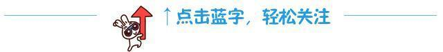

2016理工杯最酷智能车答辩

“理工杯”校园机器人大赛是由沈阳理工大学校团委、创新创业中心、电子技术与应用协会、众创空间共同主办，由信息科学与工程学院，自动化与电气工程学院，机械工程学院作为指导单位的一场大型比赛，旨在提高我校学生的动手能力，编程能力，机械能力以及思维能力，有利于提高我校学生综合素质，已经是我校的传统比赛。
沈理第二届机器人大赛——最酷智能车评比
在规定时间内上交答辩素材，参与答辩，完成答辩。
最酷智能车评比赛制：评比分两个阶段，第一阶段为答辩赛，第二阶段为网络投票赛（评比总分为100分，其中答辩占85%，微信投票占15%）。
比赛时间：
12月5日到12月9日 18：00-20：30
文体中心210
A、答辩评分项分为8种：
1.作品介绍效果（10分）
答辩开始会有5分钟的自己介绍时间，评委会根据介绍的情况酌情给分。
2.答辩效果（10分）
答辩后期会有评委提问，评委会根据回答的情况酌情给分。
3.答辩现场队员所到情况（10分）
答辩现场各队队员必须全部到场，没缺一人扣二分。
4.作品报告的内容描述情况（20分）
必须上交报告，无报告的队伍此项0分，评委会根据报告的情况酌情给分。
5.智能车外观设计（10分）
评委会根据小车外观设计情况酌情给分。
6.智能车电路设计（10分）
评委会根据小车程序设计情况酌情给分。
7.智能车程序设计（10分）
评委会根据小车程序设计情况酌情给分。
8.成员参与情况（5分）
评委会根据总体答辩效果自行判断各个成员参与程度，酌情给分。
B、微信投票分数计算：
微信投票第一名的队伍得满分（15分），其余队伍所得分数=15×各队伍所得票数/投票数第一名队伍的票数。
未按时参与答辩的队伍，取消其参与最酷智能车评比资格，同时对答辩超时的队伍，评委会酌情扣分。
答辩各组具体时间请查看答辩顺序表（见理工杯比赛群，QQ群号：369658035）。

策划：电子技术与应用协会
文字：理工杯参赛手册
编辑：潘俊儒


扫描二维码
关注更多精彩